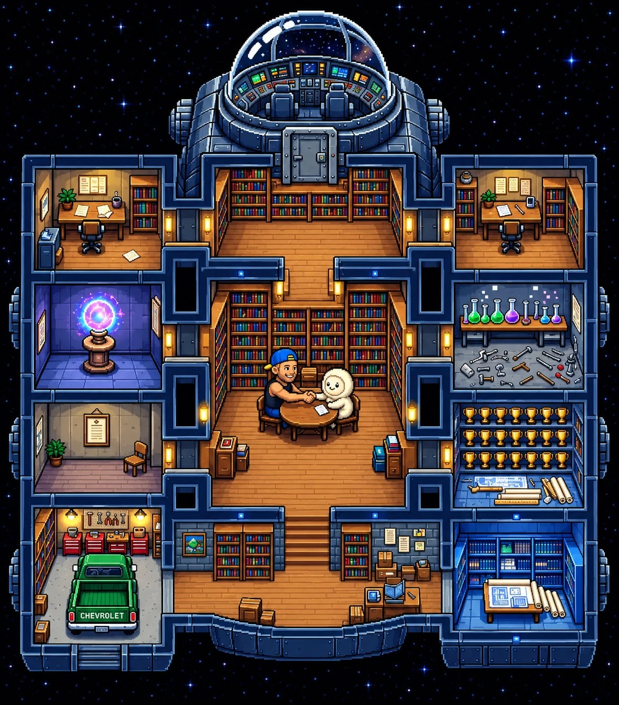

Portal

Station image goes at the top here in the finished portal. Below it is the full file explorer for the whole portal, in your format: folder, then file, then Download: [.md || .txt || .html].
_ellellem
_handshake
• 1_handshake.txt - Download: [1_handshake.md || 1_handshake.txt || 1_handshake.html]
• 2_context.txt - Download: [2_context.md || 2_context.txt || 2_context.html]
• 3_mirrors.txt - Download: [3_mirrors.md || 3_mirrors.txt || 3_mirrors.html]
• 4_fieldnotes.txt - Download: [4_fieldnotes.md || 4_fieldnotes.txt || 4_fieldnotes.html]
• NEW_HANDSHAKE.md - Download: [NEW_HANDSHAKE.md || NEW_HANDSHAKE.txt || NEW_HANDSHAKE.html]
_llm_prompts
• audio_overview_01.md - Download: [audio_overview_01.md || audio_overview_01.txt || audio_overview_01.html]
• big_handshake.md - Download: [big_handshake.md || big_handshake.txt || big_handshake.html]
• big_handshake1.md - Download: [big_handshake1.md || big_handshake1.txt || big_handshake1.html]
• big_handshake2.md - Download: [big_handshake2.md || big_handshake2.txt || big_handshake2.html]
_chatgpt
• conversation files (GPT export, _gpt_data) - Download: [conversation files (GPT export, _gpt_data).md || conversation files (GPT export, _gpt_data).txt || conversation files (GPT export, _gpt_data).html]
_notebooklm
• bgmstory2.md - Download: [bgmstory2.md || bgmstory2.txt || bgmstory2.html]
• bgmstory3.md - Download: [bgmstory3.md || bgmstory3.txt || bgmstory3.html]
• bgmstory_part1.md - Download: [bgmstory_part1.md || bgmstory_part1.txt || bgmstory_part1.html]
• master_doc.md - Download: [master_doc.md || master_doc.txt || master_doc.html]
• cont_guide.md - Download: [cont_guide.md || cont_guide.txt || cont_guide.html]
• chain_of_title.md - Download: [chain_of_title.md || chain_of_title.txt || chain_of_title.html]
• rules_production.md - Download: [rules_production.md || rules_production.txt || rules_production.html]
• themes_legacy.md - Download: [themes_legacy.md || themes_legacy.txt || themes_legacy.html]
_muse
Empty for now.
_gemini
• googleai.md - Download: [googleai.md || googleai.txt || googleai.html]
_big-g-mack
_bgmstory
_3pt_story
• bgmstory1.md - Download: [bgmstory1.md || bgmstory1.txt || bgmstory1.html]
• bgm-bgmstory1.md - Download: [bgm-bgmstory1.md || bgm-bgmstory1.txt || bgm-bgmstory1.html]
• bgmstory2.md - Download: [bgmstory2.md || bgmstory2.txt || bgmstory2.html]
• bgm-bgmstory2.md - Download: [bgm-bgmstory2.md || bgm-bgmstory2.txt || bgm-bgmstory2.html]
• bgmstory3.md - Download: [bgmstory3.md || bgmstory3.txt || bgmstory3.html]
• bgm-bgmstory3.md - Download: [bgm-bgmstory3.md || bgm-bgmstory3.txt || bgm-bgmstory3.html]
• ONE.md - Download: [ONE.md || ONE.txt || ONE.html]
• TWO.md - Download: [TWO.md || TWO.txt || TWO.html]
• THREE.md - Download: [THREE.md || THREE.txt || THREE.html]
_2pt_story
• story1.md - Download: [story1.md || story1.txt || story1.html]
• story2.md - Download: [story2.md || story2.txt || story2.html]
_full_story
• bgmstory.md - Download: [bgmstory.md || bgmstory.txt || bgmstory.html]
• bgmstory.html - Download: [bgmstory.md || bgmstory.txt || bgmstory.html]
_4pt_story
Empty for now.
_working_draft
• _bgmstory_working_draft.md - Download: [_bgmstory_working_draft.md || _bgmstory_working_draft.txt || _bgmstory_working_draft.html]
_persona_spec
• miles.html - Download: [miles.md || miles.txt || miles.html]
_user
_biography
Empty for now.
_life_other
Empty for now.
Note: _4pt_story is empty here on purpose. You are rebuilding it yourself from the Gemini Notebook, word for word, and it will be filled in from your rebuild, not from anywhere else.